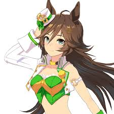

Mr. C. B. (Japanese : ミスターシービー, April 7, 1980 - December 15, 2000) was a Japanese Thoroughbred racehorse and stud. In 1983 he won the Japanese Triple Crown, becoming the third horse to do so after St Lite and Shinzan. In recognition of this feat and his other strong showings, Mr. C. B. was named Japanese Horse of the Year for 1983 by the JRA, and would later be inducted into the Japan Racing Association Hall of Fame in 1986.
Source: Wikipedia

In Uma Musume: Pretty Derby, Mr. C.B. is portrayed as an umamusume who loves the free world of racing. She has a mysterious charm and an unbounded ambiance that draws others to her. While she appears free-spirited at first glance, this stems from her stubborn nature - she refuses to do anything she doesn't agree with.
Standing at 166cm tall with long brown hair curled outward on the sides, Mr. C.B. wears a distinctive white mini hat with a "CB" badge. Her cyan eyes and taller stature make her stand out among the other umamusume, though she may be surprisingly clumsier than most.
As one of the Triple Crown winners in the Uma Musume universe (alongside Symboli Rudolf and Narita Brian), Mr. C.B. holds a prestigious position. Her famous quote "When the race starts, the world is ours. Right?" reflects her confident racing philosophy.
Interestingly, unlike her real-life counterpart who belonged to Miho Training Center, Mr. C.B. doesn't belong to any dormitory in the Uma Musume world, choosing to live alone. This independence reflects her free-spirited and stubborn personality.
She made her first anime appearance in episode 2 as an example of a Triple Crown winner, and later appeared in episode 14 where she cheers up Cedar Blade, showing her supportive nature despite her independent streak.
Psst. tell Manhattan Cafe im faster than her friend!